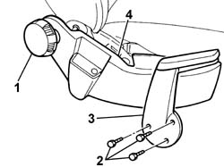
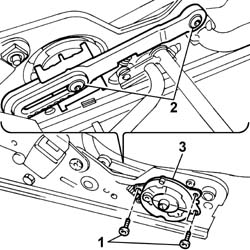

7045A34 manual device for adjusting seat height - r r with seat removed
- Path
- Procedures > 70 FITTINGS > 7045 FRONT SEATS > 7045A front seat assembly > 7045A34 manual device for adjusting seat height - r r with seat removed
- Kind
- repair procedure (removal / refitting; the operation number is the code)
- Applies to
- all engines; all production periods
- Interactive page
- https://sloeber94.github.io/elrnDB-fPnd/en/#/2753233
Applies to: all engines; all production periods
 Removing
Removing
 Refitting
Refitting1. Using a suitable cutter, remove the angle adjustment knob which is a press fit on the control device.
 | Name | Country |
|---|---|---|
- | Scraper blade | 1.878.077.000 |
2. Undo the retaining bolts.
3. Remove the manual seat height adjustment control lever.
4. Remove the inner guard from the seat, releasing the inner clips located along the perimeter of the actual guard.

Applies to: all engines; all production periods
Temporarily position the device control lever and place the seat in the end of travel position, either fully lowered or fully raised.
1. Undo the outer bolts fixing the manual device to the seat.
2. Undo the inner bolts fixing the manual height adjustment device idler to the seat.
3. Remove the driver's seat manual height adjustment device complete with idler.

Applies to: all engines; all production periods
Refitting
RemovingCheck the condition of the driver's seat manual height adjustment device and idler.
Place the idler in the housing in the seat and tighten the fixing bolts to torque.
Fit the driver's seat manual height adjustment device and tighten the fixing bolts to torque.
Temporarily fit the control lever and check the operation carrying out a complete mechanism raising and lowering cycle.
Check the condition of the attachment clips and the inner guard.
Fit the inner guard, press fitting it into the housing in the front seat.
Fit the front seat manual height adjustment lever and tighten the fixing bolts.
Check the condition of the engagement teeth inside the knob; if they are worn or damaged, replace the knob.
Fit the angle adjustment knob, which is a press fit, on the control device.